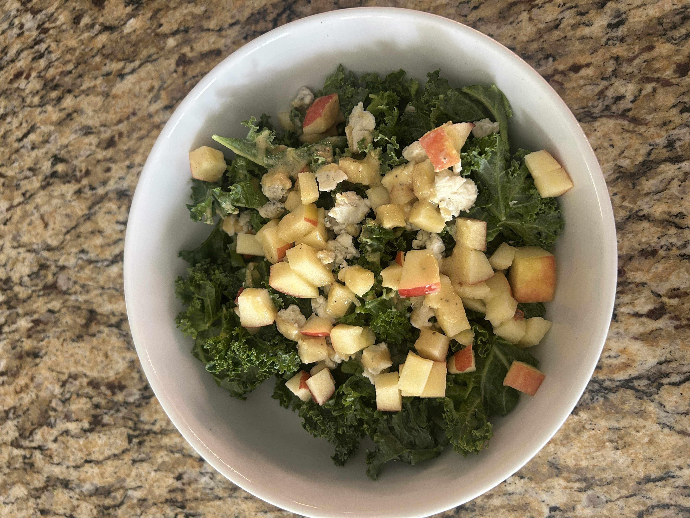
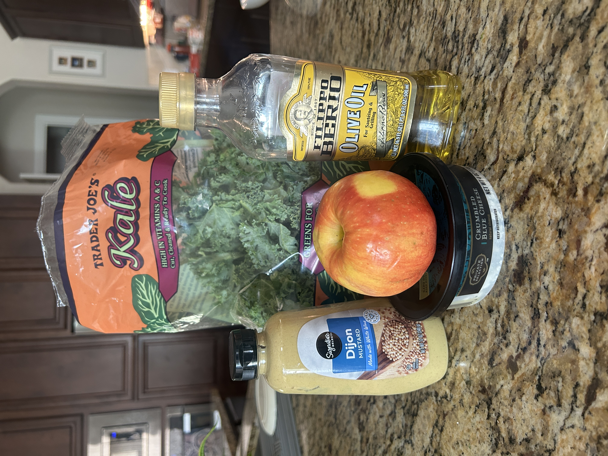

This salad has it all: fresh kale, sweet apples, creamy blue cheese, and a simple tangy dressing that pulls everything together. It’s super easy to make (like, 10 minutes tops) and hits that sweet spot between light and satisfying. Great for lunch and a quick way to get your veggies and fiber in!
Nutrition Facts
- ~250 calories
- ~22g carbs
- ~8-10g protein
- ~14g fat
Ingredients

- 2 cups chopped kale
- 1/4 cup crumbled blue cheese
- 1/4 honey-crisp apple
- Dijon Mustard
- Olive oil
- Apple Cider Vinegar
- Pepper and Garlic Powder
Steps to Make
- Wash kale in cold water and massage for 3-5 minutes to reduce bitterness.
- Add 1/4 cup blue cheese crumbles on top
- Cut and dice 1/4 honey-crisp apple
- In a separate bowl add 1 tbsp Dijon Mustard and 1 tbsp apple cider vinegar and mix well
- Add a dash of pepper and garlic powder to your dressing as well as 1/4 tsp olive oil and 1 tbsp water
- Mix throughly

- Add dressing on top and enjoy!